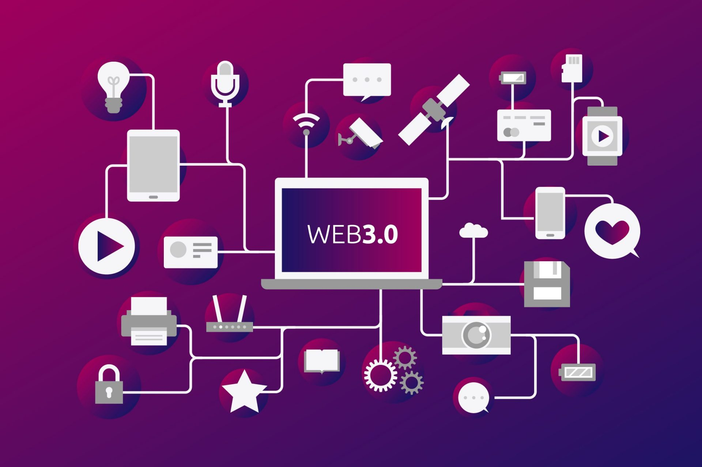
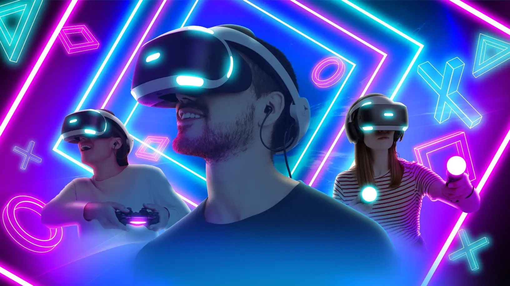
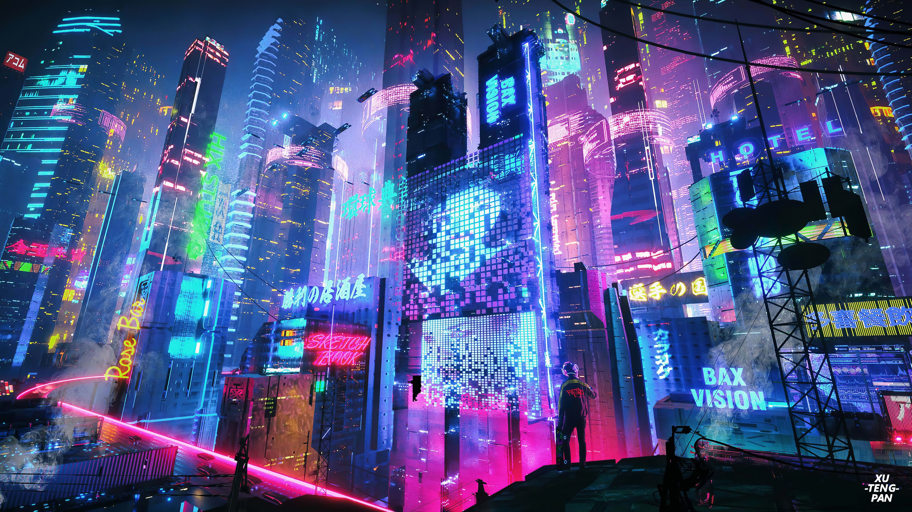

Метавселенная – это digital-пространство, которое создаёт симуляцию реальности и объединяет существующие сервисы, контент, продукты брендов в единой среде.
Метавселенная – это digital-пространство, которое создаёт симуляцию реальности и объединяет существующие сервисы, контент, продукты брендов в единой среде.Web 3.0 – это интернет-технология нового поколения, которая опирается на машинное обучение, искусственный интеллект (ИИ) и технологию блокчейн. Данный термин был придуман Гэвином Вудом – основателем Polkadot и соучредителем Ethereum.
 Эта концепция направлена на создание открытых, связанных, умных сайтов и приложений с улучшенным машинным анализом данных. Децентрализация и цифровая экономика становятся ключевыми чертами, придающими ценность создаваемому в сети контенту. "Web 3.0" обещает персонализированную и актуальную информацию с использованием искусственного интеллекта и машинного обучения. Семантическая верстка, блокчейн, 3D-визуализация, метвселенные искусственный интеллект являются технологическими трендами будущего "Web 3.0", улучшая интерактивность и визуализацию данных. Внедрение 3D-интерфейсов и рост искусственного интеллекта сделают интернет более открытым и децентрализованным. "Web 3.0" стремится к превращению пользовательского контента в машиночитаемые данные, и метавселенные играют важную роль в этом развитии.
Метавселенная – это digital-пространство, которое создаёт симуляцию реальности и объединяет существующие сервисы, контент, продукты брендов в единой среде.
Мир метавселенной существует вместе с реальным, пересекается с ним или дополняет. Здесь учатся, ходят по виртуальному магазину и встречаются с коллегами на совещании в цифровом офисе. Метавселенную называют объёмным интернетом. В сети пользователь потребляет контент, а в цифровой вселенной сам находится внутри контента.
Каждый человек создаёт аватар – цифровую копию, которую видят другие пользователи. Управляется аватар с мобильного устройства, но в идеальном варианте через шлем виртуальной реальности, который нужен для полного погружения в «параллельный мир».
Люди сидят за столом в офисе и обсуждают важный вопрос. В конце встречи все отключаются, и оказывается, что каждый из них находится в разном месте, а офис был виртуальным. Примерно так будут проходить совещания в метавселенной. Для погружения в эту вселенную придется надеть на себя VR-шлем. Онлайн-встреча пройдёт как в Zoom, но с полным погружением и эффектом присутствия. Не потребуется включать демонстрацию экрана, потому что информация появится перед аватаром каждого пользователя.
В метавселенной также проходят встречи с друзьями в цифровой кофейне, в баре или в придуманном мире. Вместе можно пойти на тренировку или поиграть в игру. Чтобы это сделать, каждый надевает шлем виртуальный реальности у себя дома, и компания друзей отправляется в виртуальный кинотеатр, хотя на самом деле между ними тысячи километров.
Нет! Есть признаки, которые отличают метавселенную от компьютерной игры и виртуальной реальности:

Разработка метавселенных разными компаниями – тоже проблема для их развития. Объединить разные пространства сейчас сложно. Нужно договориться об общей валюте, о правилах поведения пользователей и о законах метавселенной.
Метавселенные расширят возможности бизнеса с виртуальными офисами и инвестициями в digital-объекты. Компании уже открывают свои цифровые магазины и размещают рекламу на билбордах метавселенной. В цифровой вселенной проводят мероприятия, а в будущем digital-пространства станут площадкой для обучения.

Концепция Web 3.0 и ее влияние на информационные технологии предоставляют множество перспективных возможностей для улучшения жизни и работы людей, а также для развития более эффективных и инновационных бизнес-моделей.